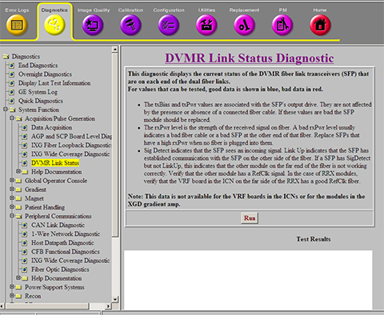
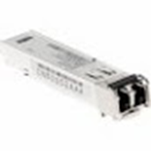
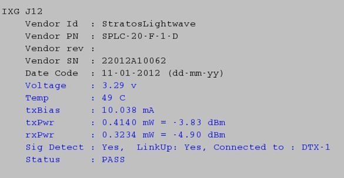
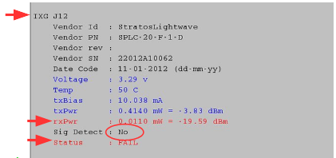
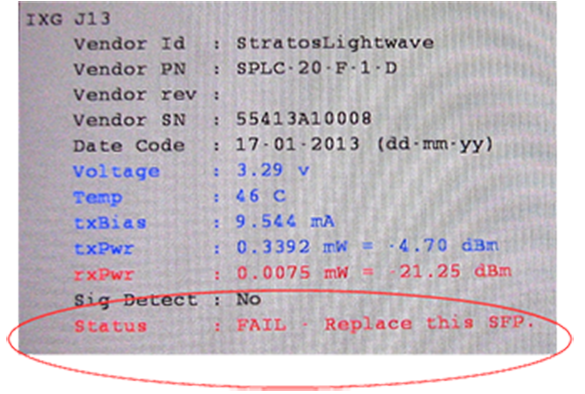

DVMR link status diagnostic
1 Diagnostic path
Figure 1. DVMR link status diagnostic

2 Purpose
The DVMR Link Status Diagnostic accesses the SFP (small form-factor pluggable) fiber optic transceivers connecting the MGD or CAM chassis to external modules. It tests the SFP fiber optic transceivers used by many components in the MR system and reports the health of the SFP with a status of PASS or FAIL. A PASS result indicates all SFPs working per design and no action required. A FAIL result with an action statement such as “'Replace the SFP” requires the FE to perform the recommended action.
This diagnostic does not report data for SFPs on the VRF boards in the ICNs or the SFPs on the legacy XGA and XPS gradient hardware in the XGD subsystem, which includes a Cronus Chassis. SFP data is reported from SFPs used in XG2 gradient hardware.
3 Components tested
-
SFP fiber optic transceivers in all devices, except VRF and XGD
-
SFPs in XG2
-
All corresponding dual-fiber optic cables
 |
|

|
Most SFP failures are due to ESD events. ESD events as low as 400 V are known to damage SFP modules. ESD events are commonly 5 kV or more.
Other failures are due to SFP optics and exposed glass Rx and Tx ends of cables being fouled by contaminants. Do not touch the exposed ends on fiber connectors. Leave the dust caps in place until you are ready to install the SFP module. For more information on handling and cleaning the SFP transceiver, see Fiber Optic Cable Devices Installation and Replacement.
Figure 2. SFP fiber optic transceiver

4 Requirements
SFPs must be connected through dual-fiber (Tx, Rx) cable to SFP in another device.
5 Test sequence
-
Navigate to DVMR Link Status Diagnostic (see Figure 1).
-
Click Run.
6 Expected results
Diagnostic results display the device and connection with a status of PASS or FAIL.
In the following example, the diagnostics reports the IXG J12 with a status of PASS. Additional information is also reported: voltage, temperature, transmission bias, transmission power, receiving power, whether a signal has been detected, and name of the component where the signal ends.
Figure 3. DVMR link status diagnostic PASS result

In the example below, the diagnostic reports FAIL with no signal detected, a phantom Rx power signal, and no prescribed action. If a remote device is plugged into J12, there is not enough signal. If J12 is unused, there is too much rxPwr being reported. It is a phantom signal; rxPwr should be 0. In both cases, the recommendation is to replace the SFP.
Figure 4. DVMR diagnostics reports FAIL and no signal

|
|
If the diagnostic reported a signal detected on the port and low rxPwr, there are several things to check to find out why the rxPwr is low:
-
Verify that both ends of the fiber are securely seated.
-
Clean the fiber optic ferrules on both ends of the cable, and clean the connection points on the SFP on both ends. See Fiber Optic Cable Devices Installation and Replacement. Then retest.
-
Try using a spare fiber and retest.
-
Replace the SFP on the far end of the fiber and retest.
-
Replace the SFP on the local end of the fiber and retest.
If the signal is still weak, replace the SFP. If the signal is still weak after the replacing the SFP, replace the cable.
In the example below, the diagnostic reports FAIL with no signal detected and prompts you to replace the SFP on J13.
The diagnostic determined that this SFP is defective and must be replaced.
Figure 5. DVMR link status diagnostics reports FAIL
